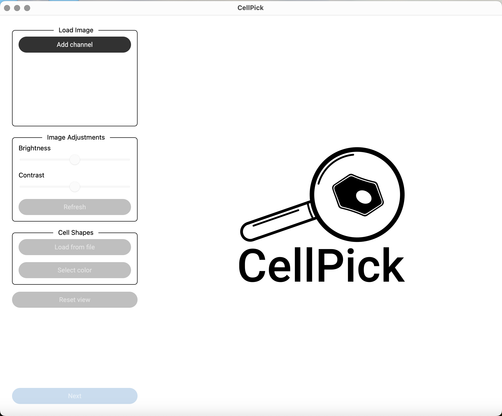

CellPick is a A cell selection tool for spatial proteomics powered by combinatorial optimization.
Understanding how proteins are distributed across the spatial architecture of tissues is essential to unravel the functional organization of organs in both healthy and diseased states. Techniques such as Deep Visual Proteomics rely on single-cell laser-capture microdissection. CellPick facilitates the selection of cells for laser microdissection, as it strategically selects cells from any tissue region, and endows them with spatial information with respect to landmarks of interest.
Laser microdissection is a technique that allows the dissection of single cells from tissues via a high- powered laser. A naive selection of the cells to be cut, such as random selection, is usually effective in contexts with abundant cells. However, it often results in the selection of contiguous shapes when applied to tissue regions with sparse cellular distribution, thereby risking damaging the cells during microdissection. To overcome this, we introduce a custom shape selection technique that employs a combinatorial optimization procedure for the selection of cells, ensuring the selection of non-contiguous shapes, while approximately maximizing coverage within a restricted tissue area.

CellPick allows the specification of two regions of interest, called landmarks, thus establishing a gradient along a relevant axis. Examples of landmarks can be, e.g., two types of veins in the liver. The selected shapes are then automatically endowed with a value indicating how close they are to the two points of interest. This allows to find their position on the gradient of interest, which allows to correlate protein intensity levels and the closeness to the landmarks.